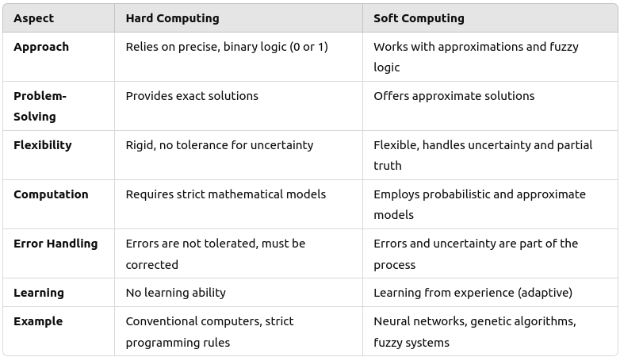

Soft Computing
- Soft Computing is an approach to computing that models the human mind’s ability to make decisions in an uncertain, imprecise, or complex environment. Unlike traditional, or "hard," computing, which relies on exact, binary logic (0s and 1s), soft computing deals with approximation, flexibility, and learning from experience to solve complex real-world problems.
- Soft computing techniques focus on developing systems that can handle ambiguity, uncertainty, and approximation, making them well-suited for fields like artificial intelligence (AI), pattern recognition, and robotics.
Difference between Hard and Soft Computing

Requirement of Soft Computing
Soft computing is essential because many real-world problems are too complex for traditional computing methods. Systems must handle:
- Uncertainty: Data may not always be precise, requiring flexible models.
- Partial truths: Situations where a simple binary "true/false" answer isn’t sufficient.
- Imprecision: Many problems, such as human language processing, involve vague or imprecise inputs.
- Complex systems: Soft computing helps in dealing with complex, non-linear systems, like weather prediction or stock market analysis.
Major Areas of Soft Computing
- Fuzzy Logic: Mimics human reasoning, allowing for more than just "true" or "false" outcomes. It’s widely used in control systems, such as thermostats or automated vehicle systems.
- Neural Networks: Modeled after the human brain, these networks learn from data and improve over time. They are used in areas like image recognition, speech processing, and autonomous systems.
- Genetic Algorithms: Inspired by natural selection, these algorithms "evolve" solutions over generations. They are useful for optimization problems, such as route planning or complex decision-making.
- Probabilistic Reasoning: Deals with uncertainty using probabilities. It is useful in situations where outcomes are not deterministic, like predicting stock market trends or diagnosing diseases.
Applications of Soft Computing
Soft computing techniques are applied in a variety of fields, including:
- Artificial Intelligence (AI): Many AI systems rely on neural networks and fuzzy logic to emulate human decision-making.
- Pattern Recognition: Soft computing helps identify patterns in complex data, such as handwriting recognition or facial recognition.
- Robotics: Soft computing enables robots to navigate environments with uncertain data, making them more adaptable.
- Data Mining: Soft computing techniques are used to discover patterns and relationships in large datasets.
- Control Systems: Fuzzy logic controllers are used in industrial systems, like temperature control in manufacturing plants.
- Medicine: Soft computing helps in diagnosing diseases, predicting patient outcomes, and optimizing treatment plans.
- Economics and Finance: Used in predicting market trends, risk analysis, and portfolio optimization.